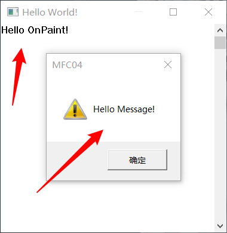

# 什么是消息映射
消息映射是 MFC 内建的一个消息分派机制，只要利用数个宏以及固定形式的写法（类似于填表格）就可以让我们的框架知道一旦消息发生，该往哪一个类去传递，每一个类只能拥有一个消息映射表格，也可以没有。
# 本节课需要掌握的知识点
1、本节必须掌握的知识点
三个关键的宏 DECLARE_MESSAGE_MAP 、 BEGIN_MESSAGE_MAP 和 END_MESSAGE_MAP
如何添加一个消息？
2、需要简单了解的内容
AFX_MSGMAP_ENTRY 结构和 AFX_MSGMAPMessageMapFunctions
# 消息映射
我们来学习 MFC 消息映射的本质。
# 添加消息
我们还是使用 01 中的代码为基础：
Hello.h
#pragma once | |
#define WIN32_LEAN_AND_MEAN | |
#include<afxwin.h> | |
class CMyApp:public CWinApp | |
{ | |
public: | |
virtual BOOL InitInstance(); | |
}; | |
class CMainWindow :public CFrameWnd { | |
public: | |
CMainWindow(); | |
}; |
Hello.cpp
#include "Hello.h" | |
CMyApp theApp; | |
BOOL CMyApp::InitInstance() | |
{ | |
m_pMainWnd = new CMainWindow; | |
m_pMainWnd->ShowWindow(m_nCmdShow); | |
m_pMainWnd->UpdateWindow(); | |
return TRUE; | |
} | |
CMainWindow::CMainWindow() { | |
Create( | |
NULL, | |
TEXT("Hello World!"), | |
WS_OVERLAPPED | WS_CAPTION | WS_SYSMENU | WS_THICKFRAME | WS_MAXIMIZEBOX | WS_VSCROLL, | |
// 左上角，既起始位置是（400,300），右下角（800,700） | |
// 700 -300 是高度 800-400 是宽度 | |
CRect(400, 300, 800, 700) | |
); | |
} |
接下来演示添加一个消息。
我们还是直接利用 MFC 的宏：
在 Hello.h 中的 CMainWindow 类中做以下修改：
class CMainWindow :public CFrameWnd { | |
// 消息映射 | |
DECLARE_MESSAGE_MAP(); | |
public: | |
CMainWindow(); | |
// 消息函数 | |
afx_msg void OnLButtonDown(UINT nFlags, CPoint point); | |
afx_msg void OnPaint(); | |
}; |
在 Hello.cpp 中添加以下代码
void CMainWindow::OnLButtonDown(UINT nFlags, CPoint point) | |
{ | |
AfxMessageBox(_T("Hello Message!")); | |
} | |
void CMainWindow::OnPaint() | |
{ | |
CPaintDC dc(this); | |
// 绘制文本 | |
dc.DrawText( | |
_T("Hello OnPaint!"), // 显示内容 | |
CRect(0, 0, 200, 200), // 显示位置 | |
DT_SINGLELINE // 单行显示 | |
); | |
} | |
BEGIN_MESSAGE_MAP(CMainWindow, CFrameWnd) | |
// 写消息 | |
ON_WM_LBUTTONDOWN() | |
ON_WM_PAINT() | |
END_MESSAGE_MAP() |
在窗口中单击鼠标左键结果：

按照这样的格式我们想添加什么消息处理都可。
但是因为是宏，使用简单，但不利于我们去了解基本原理。
例如这个左键按下的消息处理函数 OnLButtonDown ，这个函数名为什么要这样写？不这么写可不可以？所以我们还需要通过转换宏去了解本质。
# 转换宏
我们把上面例子中所使用的的宏都给展开。
我在 VS2019 中所查看的定义：
# 宏 DECLARE_MESSAGE_MAP ()
转换为:
protected: | |
static const AFX_MSGMAP* PASCAL GetThisMessageMap(); | |
virtual const AFX_MSGMAP* GetMessageMap() const; |
其作用是在类中定义了两个保护成员函数 GetThisMessageMap 和 GetMessageMap 。
# 宏 BEGIN_MESSAGE_MAP、ON_WM_LBUTTONDOWN、END_MESSAGE_MAP
接下来转换另外的宏：
BEGIN_MESSAGE_MAP(theClass, baseClass) | |
// 写消息 | |
ON_WM_LBUTTONDOWN() | |
END_MESSAGE_MAP() |
BEGIN_MESSAGE_MAP(theClass, baseClass) 转换为：
PTM_WARNING_DISABLE | |
const AFX_MSGMAP* theClass::GetMessageMap() const | |
{ | |
return GetThisMessageMap(); | |
} | |
const AFX_MSGMAP* PASCAL theClass::GetThisMessageMap() | |
{ | |
typedef theClass ThisClass; | |
typedef baseClass TheBaseClass; | |
__pragma(warning(push)) | |
__pragma(warning(disable: 4640)) /* message maps can only be called by single threaded message pump */ \ | |
static const AFX_MSGMAP_ENTRY _messageEntries[] = | |
{ |
我们暂时忽略掉处理警告的代码。
BEGIN_MESSAGE_MAP 宏，定义了两个函数，一个函数名为 GetMessageMap ，其功能是调用 GetThisMessageMap ，另一个函数便是 GetThisMessageMap , 这个函数中定义了一个 AFX_MSGMAP_ENTRY 类型的数组。
接下转换 ON_WM_LBUTTONDOWN() ：
{ WM_LBUTTONDOWN, 0, 0, 0, AfxSig_vwp, | |
(AFX_PMSG)(AFX_PMSGW) | |
(static_cast< void (AFX_MSG_CALL CWnd::*)(UINT, CPoint) > ( &ThisClass :: OnLButtonDown)) }, |
继续转换 END_MESSAGE_MAP() ：
{ 0, 0, 0, 0, AfxSig_end, (AFX_PMSG)0 } | |
}; | |
__pragma(warning(pop)) | |
static const AFX_MSGMAP messageMap = { &TheBaseClass::GetThisMessageMap, &_messageEntries[0] }; | |
return &messageMap; | |
} | |
PTM_WARNING_RESTORE |
END_MESSAGE_MAP 负责 GetThisMessageMap 函数的收尾
而我们使用的宏：
BEGIN_MESSAGE_MAP(CMainWindow, CFrameWnd) | |
// 写消息 | |
ON_WM_LBUTTONDOWN() | |
END_MESSAGE_MAP() |
便可转换为：
PTM_WARNING_DISABLE | |
const AFX_MSGMAP* CMainWindow::GetMessageMap() const | |
{ | |
return GetThisMessageMap(); | |
} | |
const AFX_MSGMAP* PASCAL CMainWindow::GetThisMessageMap() | |
{ | |
typedef CMainWindow ThisClass; | |
typedef CFrameWnd TheBaseClass; | |
__pragma(warning(push)) | |
__pragma(warning(disable: 4640)) /* message maps can only be called by single threaded message pump */ | |
static const AFX_MSGMAP_ENTRY _messageEntries[] = | |
{ | |
{ WM_LBUTTONDOWN, 0, 0, 0, AfxSig_vwp, (AFX_PMSG)(AFX_PMSGW)(static_cast<void (AFX_MSG_CALL CWnd::*)(UINT, CPoint)> (&ThisClass::OnLButtonDown)) }, | |
{ 0, 0, 0, 0, AfxSig_end, (AFX_PMSG)0 } | |
}; | |
__pragma(warning(pop)) | |
static const AFX_MSGMAP messageMap = { &TheBaseClass::GetThisMessageMap, &_messageEntries[0] }; | |
return &messageMap; | |
} | |
PTM_WARNING_RESTORE |
如上代码转换完成之后就可以很清晰的知道使用宏的时候鼠标左键按下必须使用 OnLButtonDown 这个函数名是因为这里是写死在代码中的，没办法改变；
我们还可以很清晰的看见 _messageEntries 这个数组就是存放着我们的消息，这就是一个消息映射的表格，而这个数组是一个结构体数组，所以我们来看一下 AFX_MSGMAP_ENTRY 这个结构体。
# 结构体 AFX_MSGMAP_ENTRY
struct AFX_MSGMAP_ENTRY | |
{ | |
UINT nMessage; //windows message # Windows 消息类型 ID | |
UINT nCode; //control code or WM_NOTIFY code #对于窗口消息该值为 0，处理命令消息和控件通知的函数使用与此相同的消息映像。 | |
UINT nID; //control ID (or 0 for windows messages) #命令消息 ID 的起始范围 | |
UINT nLastID; //used for entries specifying a range of control id's #命令消息 ID 范围的终点 | |
UINT nSig; //signature type (action) or pointer to message #消息的动作标识 enum AfxSig 里面的成员 | |
AFX_PMSG pfn; //routine to call (or special value) #响应消息时应执行的函数 | |
}; |
根据注释可以非常清晰的看见每个参数的意义，主要说下后两个参数， AFX_PMSG pfn 为响应消息时执行的函数，这里也就是 OnLButtonDown 函数的地址， UINT nSig 为消息的动作标识 enum AfxSig 里面的成员，在当前值为 AfxSig_vwp ，这是一个宏，我们可以跟进查看一下：
AfxSig_vwp = AfxSig_v_u_p, // void (UINT, CPoint) | |
// 54 | |
AfxSig_v_u_p, // void (UINT, CPoint) |
它表示着 AFX_PMSG pfn （响应消息时执行的函数）的返回值和参数的格式：
void CMainWindow::OnLButtonDown(UINT nFlags, CPoint point) | |
{ | |
AfxMessageBox(_T("Hello Message!")); | |
} |
从 MFC 的源码中我们可以发现 AFX_MSGMAP_ENTRY 结构数组的最后一个成员全是 0 。
此外还有另一个结构体 AFX_MSGMAP
# 结构体 AFX_MSGM
struct AFX_MSGMAP | |
{ | |
const AFX_MSGMAP* (PASCAL* pfnGetBaseMap)(); | |
const AFX_MSGMAP_ENTRY* lpEntries; | |
}; |
这个结构体有两个成员，一个是指向其父类的 GetThisMessageMap 的函数指针，另一个是指向 当前的 AFX_MSGMAP_ENTRY 结构体的指针。
# MFC 的三大类消息
- 标准消息
任何以 WM 打头的消息都属于标准消息 (除 WM_COMMAND) 以外。
这类消息的响应函数名都被 MFC 规定好了。
- WM_COMMAND 命令消息
这是来自菜单、工具条按钮、加速键等用户接口对象的 WM_COMMAND 通知消息，属于应用程序自己定义的消息。通过消息映射机制，MFC 框架把命令按一定的路径分发给多种类型的对象（具备消息处理能力）处理，如文档、窗口、应用程序、文档模板等对象。
- 控件通知
通常，控件通知在某些重要事件发生时，由控件窗口发送到父窗口，如打开一个组合框。控件通知为父窗口进一步控制子窗口提供了机会。例如，打开一个组合框时，父窗口可以用组合框初建时得不到的消息填充它。
BN_XXXX 是 CButton 产生的消息，EN_XXXX 是 CEdit 产生的消息，等等。
好多消息都还没有学，后面会学习的，暂时有个大概的理解。
# 总结
消息映射的内部实现将在 MFC 的命令传递中详细的学习。
这里需要记住能处理消息映射的类必须从 CCmdTarget 类派生。，可以一层一层的跟一下 MFC 源码。
另外学习 MFC 的核心机制，就是学习微软的程序设计，学习它的设计思想。
# 课后作业
- 新建一个类，继承于 CMainWnd (CNewWnd)
- 给 CMainWnd 添加 鼠标左键点击事件 创建进新的 CNewWnd 窗口。
- 给新的窗口添加鼠标右键事件 弹出 MessageBox
不难。